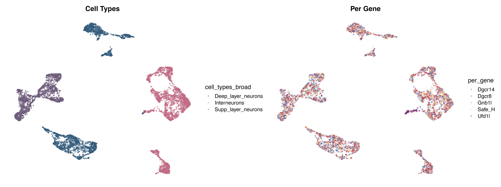
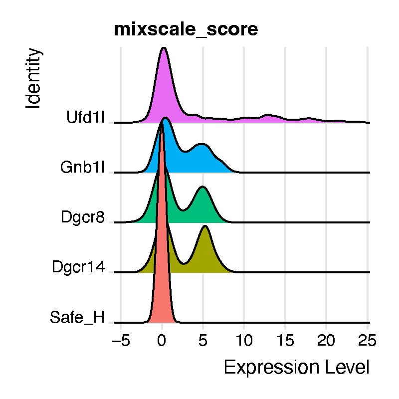
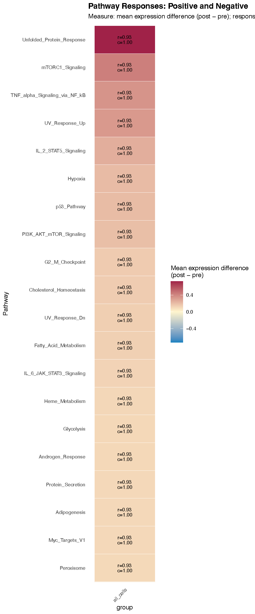

Alert System: scoring the functional consequences of an in-silico perturbation
alertsystem_tutorial.Rmdcompact can impose module-level changes onto control
cells in silico (ModulePerturbation), but a
perturbed expression matrix on its own does not tell you what the
cell is now doing differently. The Alert System is
the scoring layer that answers that question: it takes a baseline assay
and a virtually perturbed assay from the same cells, and reports,
pathway by pathway, how strongly and how consistently essential cellular
programs respond.
Because every cell contributes a paired measurement
(its own pre and its own post), the Alert
System is not a differential-expression test between two groups of
cells. It is a within-cell contrast, which removes the cell-to-cell
variation that usually dominates single-cell pathway scoring and lets us
ask a question that bulk-style summaries cannot: does the pathway
respond in a few cells very strongly, or in most cells a
little?
The question this tutorial is built around
Single-cell and single-nucleus profiling characterize only the cells recovered and retained after sample preparation, sequencing, and quality control. When a perturbation is lethal or severely destabilizing, the most affected cells are selectively lost, and what remains is a population that either compensated or was resilient to begin with. Conventional summaries — cell-type proportions, differential expression — can look unremarkable precisely because the informative cells are gone.
We work through exactly that situation. For this tutorial we use the
in vivo AAV-Perturb-seq dataset from Santinha et
al. 2023, which applied pooled CRISPR–Cas9 screening with snRNA-seq
to the adult mouse prefrontal cortex, targeting mouse homologues of
genes in the 22q11.2 locus. The original study identified substantial
transcriptional responses to all perturbations, but excluded
Ufd1l from downstream validation because
its response was enriched for a broad disruption of proteostasis rather
than a clean gene-specific phenotype.
Ufd1l is a paradox worth chasing. The goal of the gene
silencing was to eliminate target expression, yet conventional
differential expression reports Ufd1l as significantly
upregulated in the CRISPR-treated population — and, as
we will see below, most Ufd1l-targeted nuclei score near
the Safe_H control on a perturbation-strength scale. A
misleading transcript-level increase coupled with an apparent absence of
perturbed cell states points to survivor bias: nuclei
carrying the strongest disruptions were selectively depleted, leaving
behind a compensating or resilient remainder.
So the analysis proceeds in four steps, and the tutorial follows them in order:
- Look at the data. Confirm the cell types and check whether the perturbation produces any gross population shift on the UMAP.
-
Quantify perturbation strength with Mixscale.
Establish that
Ufd1l-targeted nuclei do not separate from control, which is the observation that motivates everything after it. - Impose the module change in silico with compact. Take the module alterations observed in the surviving perturbed cells and apply them to control cells, so we can ask what those changes would do.
- Score the consequences with the Alert System. Find the stress-associated programs that the module change predicts — the signature that was hidden.
Contents
- Setup
- Loading the dataset
- Visualizing the dataset
- Quantifying perturbation strength with Mixscale
- In-silico module perturbation
- Loading the pathway database
- Running
AlertSystemScore - What comes back
- The metrics table, column by column
- Choosing a response threshold
- Statistical calibration
- Visualizing with
AlertHeatmap - Combining perturbations
- The UCell channel
- Saving and reloading
- Full parameter reference
- Troubleshooting
Setup
# single-cell analysis package
library(Seurat)
# plotting and data science packages
library(tidyverse)
library(cowplot)
library(patchwork)
# co-expression network analysis packages
library(WGCNA)
library(hdWGCNA)
# using the cowplot theme for ggplot
theme_set(theme_cowplot())
# load compact library
library(compact)
# set random seed for reproducibility
set.seed(12345)
# optionally enable multithreading
# enableWGCNAThreads(nThreads = 8)Set up the output directories up front, so figures and intermediate objects land in predictable places:
out_dir <- "compact_Updates/Ufd1l/"
if (!dir.exists(out_dir)) dir.create(out_dir, showWarnings = FALSE, recursive = TRUE)
data_out <- paste0(out_dir, "data/")
fig_dir <- paste0(out_dir, "figures/")
if (!dir.exists(data_out)) dir.create(data_out, showWarnings = FALSE, recursive = TRUE)
if (!dir.exists(fig_dir)) dir.create(fig_dir, showWarnings = FALSE, recursive = TRUE)
# set the working directory
setwd(data_out)
getwd()Why
setwd(). hdWGCNA writes the topological overlap matrix to aTOM/subdirectory relative to the working directory. Setting it explicitly here keeps those files with the rest of the analysis output rather than wherever the session happened to start.
Loading the dataset
Processed data for Santinha et
al. 2023 are deposited in GEO under accession GSE236519.
This tutorial uses the pooled screen driven by the CBh
promoter (GSE236519_pooled_screen_CBh), subset to neurons
and to the Safe_H control plus the four perturbations with
the strongest transcriptional phenotypes: Dgcr8,
Dgcr14, Gnb1l, and Ufd1l.
The object has already been processed with hdWGCNA to construct a
co-expression network (modules named CBh-M1 …
CBh-M9).
# GSE236519_pooled_screen_CBh
seu_CBh_neurons <- subset(GSE236519_pooled_screen_CBh, per_gene %in% c('Safe_H', 'Dgcr8', 'Dgcr14', 'Gnb1l', 'Ufd1l'))
seu_CBh_neurons <- subset(seu_CBh_neurons, cell_types_broad %in% c('Deep_layer_neurons', 'Supp_layer_neurons', 'Interneurons'))
# hdWGCNA processed data
seu_CBh_neuronsAn object of class Seurat
30556 features across 5670 samples within 1 assay
Active assay: RNA (30556 features, 2000 variable features)
3 layers present: counts, data, scale.data
2 dimensional reductions calculated: pca, umap
table(seu_CBh_neurons$per_gene)Dgcr14 Dgcr8 Gnb1l Safe_H Ufd1l
870 1666 487 2220 427Note the group sizes: Ufd1l has the fewest recovered
nuclei of any perturbation (427), despite being targeted in the same
pooled screen. That is the first quiet hint of selective depletion.
Visualizing the dataset
Before any perturbation modeling, look at the data. We want to know two things: whether the cell-type annotations are clean, and whether the perturbed nuclei occupy their own region of the embedding or are intermixed with control.
First, copy the UMAP coordinates into the metadata so we can plot
them with ggplot2 directly and control the aesthetics
precisely:
identical(rownames(seu_CBh_neurons@meta.data),
rownames(seu_CBh_neurons@reductions$umap@cell.embeddings))
# [1] TRUE
UMAP_df <- seu_CBh_neurons@reductions$umap@cell.embeddings
identical(rownames(seu_CBh_neurons@meta.data), rownames(UMAP_df))
# [1] TRUE
# add the UMAP coordinates to the metadata
for (meta in colnames(UMAP_df)) {
seu_CBh_neurons@meta.data[[meta]] <-
UMAP_df[match(rownames(seu_CBh_neurons@meta.data), rownames(UMAP_df)), meta]
}Define consistent color schemes so the same colors carry through every figure in the project:
library(ggrastr)
color_scheme_per_gene <- list(
"Safe_H" = "#D9D9D9", # light gray control
"Dgcr8" = "#CC4C4C", # soft modern red
"Dgcr14" = "#4C72B0", # scientific blue
"Gnb1l" = "#E2A84A", # muted gold
"Ufd1l" = "#7A3178" # plum / berry
)
color_scheme_ct <- list(
"Deep_layer_neurons" = "#355C7D", # muted deep blue-slate
"Interneurons" = "#C06C84", # soft rosy orchid
"Supp_layer_neurons" = "#6C5B7B" # muted lavender-indigo
)
# UMAP_1 -> umap_1 ; UMAP_2 -> umap_2
p1 <- seu_CBh_neurons@meta.data %>%
ggplot(aes(x = umap_1, y = umap_2, color = cell_types_broad)) +
scale_color_manual(values = color_scheme_ct) +
rasterise(geom_point(size = 0.5, alpha = 0.5), dpi = 600) +
ggtitle("Cell Types") +
umap_theme
p2 <- seu_CBh_neurons@meta.data %>%
ggplot(aes(x = umap_1, y = umap_2, color = per_gene)) +
scale_color_manual(values = color_scheme_per_gene) +
rasterise(geom_point(size = 0.5, alpha = 0.5), dpi = 600) +
ggtitle("Per Gene") +
umap_theme
pdf(paste0(fig_dir, 'UMAP_seu_CBh_neurons_celltypes_n_pergene.pdf'),
height = 6, width = 16)
p1 + p2
dev.off()
The left panel shows the three broad neuronal classes. The right
panel is the one that matters for our question: the perturbed nuclei are
distributed across the same regions as the Safe_H control,
with no perturbation-specific cluster and no obvious shift in cell-type
composition. A standard reading of this figure would be “the
perturbations did not produce distinct cell states” — and that reading
is exactly what we are going to challenge.
Note.
rasterise()from ggrastr rasterizes only the point layer while keeping axes and text as vectors. With thousands of nuclei this keeps the PDF small and openable in Illustrator without flattening the labels.
Quantifying perturbation strength with Mixscale
A UMAP tells you about global structure, not about how strongly each individual nucleus responded. For that we use Mixscale, which assigns every cell a continuous perturbation score measuring how far its expression has moved from the non-targeting control in the direction characteristic of its assigned perturbation.
Where Mixscale comes from. Mixscale is not part of
compact. It is a separate R package from the Satija lab (satijalab.github.io/Mixscale, source at github.com/longmanz/Mixscale), which extends the mixscape workflow introduced in Seurat. The two functions used below come from different places:
CalcPerturbSig()is a Seurat function (part of the original mixscape workflow). It computes a local perturbation signature by subtracting, from each cell, the average expression of its nearest non-targeting neighbors in PCA space. This removes confounding technical and cell-state variation before scoring.RunMixscale()is from the Mixscale package. Where mixscape makes a binary perturbed / non-perturbed call, Mixscale returns a continuous score, which is what lets us see that a perturbation produced a graded response — or, as here, almost none at all.Install it separately (
remotes::install_github("longmanz/Mixscale")) and cite it alongsidecompact; it is doing independent work in this analysis.
library(ggridges)
library(ggplot2)
library(Mixscale)
# calculate perturbation signatures (Seurat / mixscape)
seu_CBh_neurons <- CalcPerturbSig(
object = seu_CBh_neurons,
assay = "RNA",
slot = "data",
gd.class = "per_gene",
nt.cell.class = "Safe_H",
reduction = "pca",
ndims = 20,
num.neighbors = 20,
new.assay.name = "MixScale",
split.by = NULL # metadata column if multiple biological contexts exist
)
# Mixscale: continuous perturbation scores
seu_CBh_neurons <- RunMixscale(
object = seu_CBh_neurons,
assay = "MixScale",
slot = "scale.data",
labels = "per_gene",
nt.class.name = "Safe_H",
min.de.genes = 5,
logfc.threshold = 0.2,
de.assay = "RNA",
max.de.genes = 100,
new.class.name = "mixscale_score",
fine.mode = FALSE,
verbose = FALSE,
split.by = NULL
)Put the control first so the ridge plot reads left to right as a comparison against baseline:
gene_order <- c("Safe_H", "Dgcr14", "Dgcr8", "Gnb1l", "Ufd1l")
seu_CBh_neurons$per_gene <- factor(
seu_CBh_neurons$per_gene,
levels = gene_order
)
# check the distribution of the scores for each perturbation
p <- RidgePlot(
seu_CBh_neurons,
features = "mixscale_score",
group.by = "per_gene"
) + NoLegend()
pdf(paste0(fig_dir, 'RidgePlot_mixscale_score.pdf'), width = 4, height = 4)
p
dev.off()
This is the observation the rest of the tutorial exists to
explain. Dgcr8, Gnb1l, and
Dgcr14 targeting produces distinct populations with
elevated Mixscale scores — a graded, detectable response. Most
Ufd1l-targeted nuclei instead sit near the
Safe_H control, with only a subset reaching higher
scores.
Read together with the conventional differential expression result —
Ufd1l appearing upregulated in the CRISPR-treated
population, the opposite of what gene silencing should produce — the
pattern suggests a complex biological phenotype rather than a simple
failure of the knockout. Nuclei harboring the strongest
Ufd1l disruptions were likely selectively depleted, leaving
behind a population that is either compensating for the genetic insult
or that was resilient from the start.
If that is true, the informative cells are not in the dataset and no amount of re-testing the surviving cells will recover them. What we can do is take the module-level changes that are still visible in the survivors, impose them on control cells in silico, and ask what those changes would do to essential cellular programs. That is the next section.
In-silico module perturbation
We apply the perturbation to the Safe_H control
cells only. This is deliberate: imposing an observed module
change onto healthy control cells asks “what would happen to a normal
neuron if this module moved?”, which is a cleaner counterfactual than
perturbing cells that are already perturbed (and already selected).
# make a copy containing only the control cells
seurat_obj <- seu_CBh_neurons %>% subset(per_gene == "Safe_H")
seurat_objAn object of class Seurat
30556 features across 2220 samples within 1 assay
Active assay: RNA (30556 features, 2000 variable features)
3 layers present: counts, data, scale.data
2 dimensional reductions calculated: pca, umapInspect the co-expression network that hdWGCNA built:
# optional, if not already present:
# add module eigengenes (MEs) to the metadata
MEs <- GetMEs(seurat_obj)
head(MEs)
modules <- GetModules(seurat_obj)
modules['Ufd1', ] gene_name module color kME_CBh-M1 kME_grey kME_CBh-M2 kME_CBh-M3
Ufd1 Ufd1 CBh-M1 turquoise 0.08039656 0.1009212 0.007428157 -0.06576732
kME_CBh-M4 kME_CBh-M5 kME_CBh-M6 kME_CBh-M7 kME_CBh-M8 kME_CBh-M9
Ufd1 -0.01516595 -0.01295234 0.1026164 -0.0457743 -0.02771402 0.05599821Ufd1 itself is assigned to module
CBh-M1, which is one reason that module is the one we
downregulate below. The directions we impose, though, come from the data
rather than from module membership: differential module eigengene (DME)
analysis in hdWGCNA — run upstream of this tutorial and described in the
paper, so not repeated here — identified CBh-M6 as
upregulated and CBh-M1 as downregulated in the
surviving Ufd1l nuclei relative to the Safe_H
control. In other words, we are not inventing a perturbation: we are
reconstructing the module state the perturbed cells actually ended up
in, and asking what that state would do to a healthy neuron.
Applying the module perturbations
ModulePerturbation() moves a module’s hub genes in the
specified direction and propagates the change through the cell–cell
graph, producing a new assay holding the perturbed expression
matrix.
# apply the up-regulation of module CBh-M6
perturbation_name <- 'M6_up'
seurat_obj <- ModulePerturbation(
seurat_obj,
mod = "CBh-M6",
perturb_dir = 1,
perturbation_name = perturbation_name,
graph = 'RNA_nn',
n_hubs = 10,
delta_scale = 2,
n_iters = 10, # default is 3
row_normalize = TRUE,
use_velocyto = FALSE,
n_workers = 1
)
# apply the down-regulation of module CBh-M1
perturbation_name2 <- 'M1_down'
seurat_obj <- ModulePerturbation(
seurat_obj,
mod = "CBh-M1",
perturb_dir = -1,
perturbation_name = perturbation_name2,
graph = 'RNA_nn',
n_hubs = 10,
delta_scale = 2,
n_iters = 10,
row_normalize = TRUE,
use_velocyto = FALSE,
n_workers = 1
)
seurat_objAn object of class Seurat
91668 features across 2220 samples within 3 assays
Active assay: RNA (30556 features, 2000 variable features)
3 layers present: counts, data, scale.data
2 other assays present: M6_up, M1_down
2 dimensional reductions calculated: pca, umapThe two perturbations are modeled together because
that is what was observed in the surviving Ufd1l nuclei: a
combined module upregulation alongside the downregulation of CBh-M1
relative to the Safe_H control. Scoring them jointly (see
Combining perturbations) asks
what the joint state does, which is not the same question as
scoring each alone.
Loading the pathway database
LoadAlertSystemPathways() returns a named list of gene
vectors. It resolves gene sets from three sources, in this order:
- an explicit
pathyou supply, - the
inst/extdatadirectory shipped with the installed package, - an optional download from GitHub
(
allow_download = TRUE).
genetype <- "mouse" # or "human"
gene_sets_mouse <- LoadAlertSystemPathways(
genetype = "mouse",
database = "MSigDBhallmark"
)
gene_sets <- gene_sets_mouse
length(gene_sets)
head(names(gene_sets))Files are looked up by the pattern
<database>_gene_sets_<genetype>.rds, so a local
copy is found with:
alertdatabasePATH <- "AlertSystem/data/"
gene_sets_mouse <- LoadAlertSystemPathways(
path = alertdatabasePATH, # optional
genetype = "mouse",
database = "MSigDBhallmark"
)Where the hallmark gene sets come from
The bundled MSigDBhallmark sets are the MSigDB
hallmark (H) collection, cleaned up and stored as an
.rds of named character vectors. A copy of the cleaned
mouse and human gene lists is archived on Zenodo alongside this project.
If you want to rebuild them from the primary source, or update to a
newer MSigDB release:
-
Human — the
H: hallmark gene setscollection, fileh.all.v<version>.Hs.symbols.gmt, from the MSigDB downloads page. -
Mouse — the
MH: hallmark gene setscollection, filemh.all.v<version>.Mm.symbols.gmt, from the mouse MSigDB collections page. These are native mouse-symbol sets, not naively ortholog-mapped human sets. -
From R — the
msigdbrpackage (msigdbr(species = "Mus musculus", collection = "H")) or the WEHI R-format MSigDB distributions give you the same content without a manual download.
A .gmt file converts to the expected format in two
lines:
gmt <- clusterProfiler::read.gmt("mh.all.v2024.1.Mm.symbols.gmt")
gene_sets <- split(gmt$gene, gmt$term)Custom pathways
gene_sets is just a named list, so any pathway
collection works — your own curated signatures, a module gene list, a
published signature table:
gene_sets_custom <- list(
"UPR_core" = c("Hspa5", "Ddit3", "Atf4", "Xbp1", "Eif2ak3", "Ern1"),
"OxPhos_complexI" = c("Ndufa1", "Ndufa2", "Ndufb3", "Ndufs1", "Ndufs2"),
"Glycolysis_core" = c("Hk2", "Pfkl", "Pkm", "Ldha", "Slc2a1")
)Pathways are intersected with the features present in
both assays, and any pathway left with fewer than
min_genes detected genes is dropped. Keep an eye on the
gene_coverage column in the output — a hallmark set reduced
from 200 genes to 7 is still scored, but it is no longer the pathway you
think it is.
Running AlertSystemScore
AS_dir <- paste0(fig_dir, "AlertSystem/")
if (!dir.exists(AS_dir)) dir.create(AS_dir, showWarnings = FALSE, recursive = TRUE)
# what biological replicate structure is available?
table(seurat_obj$lane)
perturbation_name <- 'M6_up'
alert_v2 <- AlertSystemScore(
seurat_obj = seurat_obj,
gene_sets = gene_sets,
perturbation_name = "M6_up", # the perturbed assay
baseline_assay = "RNA", # the pre state
# group.by = "cell_types_broad",
# sample.by = "donor_id",
score_methods = "expression", # or c("expression", "ucell")
summary_fun = "trimmed_mean",
expression_response_threshold = 0.01,
ucell_response_threshold = 0.005,
null_unit = "auto",
n_permutations = 2000,
return_details = TRUE
)What the function does, step by step
Validate. Checks assays exist, method names are legal, and flags are logical. If
"ucell"is requested but the UCell package is missing, it warns and falls back to expression scoring.Align. Confirms both assays hold the same cells and features, then puts them in the same order.
Filter gene sets. Keeps pathways with at least
min_genesdetected features, recording the original set size so coverage can be reported.-
Score, paired. One response per cell × pathway × method. For the expression channel, the per-cell pathway response is the mean over pathway genes of the per-gene change:
where
preandpostare log-normalized values from thelayerargument ("data"by default). Label direct vs. propagated genes. Using the counts layers, genes changed directly by the perturbation are distinguished from genes that changed only through network propagation. These are annotations only — they do not change any score.
Build the per-cell table. All paired values in one long data frame.
Summarize per group. Effect, the three distribution measures, optional sign-flip null calibration, leading genes, and the two priority rankings. Benjamini–Hochberg FDR is applied separately within each group × method.
Record state under
seurat_obj@misc[[misc_name]], optionally writing RDS and CSV toout_dir.
What comes back
With return_details = TRUE you get a list:
names(alert_v2)
# "seurat" "per_cell" "metrics" "gene_sets" "params" "info_file" "metrics_file"With return_details = FALSE (the default) you get the
Seurat object back, and the same content lives in
@misc:
names(alert_v2$seurat@misc$AlertSystem)
# "schema_version" "per_cell" "metrics" "gene_sets" "params"
per_cell — the paired, cell-level table
head(alert_v2$per_cell)| Column | Meaning |
|---|---|
cell |
cell barcode |
group |
value of group.by, or "all_cells"
|
sample |
value of sample.by, or NA
|
pathway |
gene set name |
score_method |
"expression" or "ucell"
|
change_measure |
how the response was computed (e.g. difference,
log2_ratio) |
pre_score |
baseline pathway score for this cell |
post_score |
perturbed pathway score for this cell |
delta |
post_score - pre_score (or the log2 ratio) |
This table is the raw material for any custom analysis — the response
distribution for a single pathway, per-cell scatter of two pathways, or
mapping delta back onto the UMAP coordinates we added
earlier.
metrics — the group-level summary
One row per group × pathway ×
score_method. This is what AlertHeatmap()
reads, and what you should export for the supplement.
params — provenance
Every argument you passed, plus compact_version,
seurat_version, ucell_version and a
timestamp. Record this in your methods section; it is the
difference between a reproducible figure and a figure you will have to
regenerate from memory.
alert_v2$params$summary_fun
alert_v2$params$expression_response_threshold
alert_v2$params$compact_version
alert_v2$params$timestampThe metrics table, column by column
This is the heart of the Alert System, so it is worth going through every column. They fall into six families.
1. Identity and size
| Column | Definition |
|---|---|
group |
the group.by level (or "all_cells") |
pathway |
gene set name |
score_method |
"expression" or "ucell"
|
change_measure |
the response transformation used |
n_cells |
cells contributing to this row |
n_samples |
distinct sample.by values, when supplied |
2. The effect and its distribution
| Column | Definition |
|---|---|
effect |
the headline group-level response, computed with
summary_fun
|
mean_delta |
arithmetic mean of per-cell delta
|
median_delta |
median of per-cell delta
|
trimmed_mean_delta |
mean after removing trim from each tail |
q10_delta, q90_delta
|
10th and 90th percentiles of per-cell delta
|
effect is one of mean_delta /
median_delta / trimmed_mean_delta depending on
summary_fun; the other three are always reported so you can
see how much the choice matters. The default,
"trimmed_mean", is the right default: single-cell
pathway deltas have heavy tails, and a plain mean can be dragged by a
handful of cells. If mean_delta and
trimmed_mean_delta disagree sharply for a pathway, that
pathway’s response is concentrated in a small number of cells — which is
exactly what focal_priority below is designed to find.
3. The three distribution measures
These are the measures described in the methods, and they are the reason the Alert System says more than a fold-change.
| Column | Definition |
|---|---|
response_threshold |
the threshold in force for this channel |
response_rate |
fraction of all cells with |delta| ≥ threshold |
directional_consistency |
among responding cells, fraction whose sign matches
sign(effect)
|
robust_fraction |
fraction of all cells that both respond
and match sign(effect)
|
opposite_fraction |
fraction of all cells that respond with the opposite sign |
tie_fraction |
fraction of responding cells with no resolvable direction |
concordance_all |
direction agreement computed over all cells, not only responders |
directional_consistency is NA when
effect is exactly zero or no cell responds;
robust_fraction and opposite_fraction are
0 under the same conditions.
Read them as a triple:
-
High
response_rate, highdirectional_consistency→ a coherent, population-wide program shift. This is the signature you want to report. -
Low
response_rate, highdirectional_consistency→ a focal response: a minority of cells move, but they all move the same way. Easy to miss in a group mean, and often the most interesting biology in a vulnerability screen. -
High
response_rate, lowdirectional_consistency→ cells are responding but disagreeing. Usually heterogeneity you have not modeled yet (a cell state or lineage splitting the response); trygroup.by. -
High
opposite_fraction→ an explicit warning that the group-level sign is averaging over two populations moving in opposite directions. Do not report the group effect for such a pathway without splitting the group.
4. Calibration
| Column | Definition |
|---|---|
calibration_effect |
the statistic the null was built around |
null_center |
center of the sign-flip null distribution |
null_scale |
spread of the sign-flip null distribution |
null_z |
standardized effect,
(calibration_effect − null_center) / null_scale
|
empirical_p |
two-sided empirical p-value from n_permutations sign
flips |
fdr |
Benjamini–Hochberg FDR, computed within each group × score_method |
The null is a two-sided sign-flip permutation: the signs of the paired responses are randomly flipped, which is the correct null for a paired design (“the perturbation moved this pathway in no particular direction”). By default the flips are applied at the sample level — see Statistical calibration for why that matters.
5. Gene coverage and leading genes
| Column | Definition |
|---|---|
genes_in_set |
size of the original gene set |
genes_used |
genes retained after intersecting with both assays |
gene_coverage |
genes_used / genes_in_set |
n_direct_overlap |
pathway genes changed directly by the perturbation |
n_propagated_overlap |
pathway genes changed only through propagation |
gene_direction_fraction |
fraction of pathway genes moving with the effect |
leading_genes |
top leading_n genes by mean gene-level change |
n_direct_overlap is the circularity check. If a
pathway’s response is driven mostly by genes you perturbed directly —
the module’s own hub genes — then the Alert System is reporting your
input back to you. A pathway with a high
n_propagated_overlap and a low
n_direct_overlap is a genuinely downstream
consequence of the module change, and that is the claim worth
making.
# pathways whose response is mostly propagated, not directly imposed
alert_v2$metrics %>%
filter(score_method == "expression", fdr <= 0.05) %>%
mutate(propagated_share = n_propagated_overlap /
pmax(n_direct_overlap + n_propagated_overlap, 1)) %>%
filter(propagated_share > 0.8) %>%
arrange(desc(widespread_priority)) %>%
select(pathway, effect, propagated_share, n_direct_overlap,
n_propagated_overlap, leading_genes)6. The two priority scores
These exist because no single number ranks pathways well. They combine strength, breadth and coherence in two different ways.
widespread_priority — find programs that moved
across the population.
standardized_strength = |null_z| if calibration available
= |effect| / threshold if threshold > 0
= |effect| otherwise
consistency_signal = max(0, 2 * directional_consistency - 1)
= 0 if not finite
widespread_priority = standardized_strength * sqrt(response_rate) * consistency_signalThe 2c − 1 term is the key design choice: a pathway at
50% directional consistency is a coin flip and scores
zero, no matter how large its effect. The
sqrt(response_rate) term rewards breadth with diminishing
returns, so a pathway responding in 80% of cells is not ranked four
times above one responding in 20%.
focal_priority — find programs that moved hard
in a minority of cells.
focal_tail = max(0, 90th percentile of (sign(effect) * delta))
= 0 if effect == 0
focal_priority = (focal_tail / threshold) * sqrt(robust_fraction) if threshold > 0
= focal_tail * sqrt(robust_fraction) otherwiseHere the magnitude comes from the tail of the
direction-adjusted response rather than its center, so a pathway that
barely moves on average but moves dramatically in the top decile of
cells rises to the top. This is the ranking to use when you are hunting
for vulnerable subpopulations — the cells that would have been lost to
selection in a real experiment, which is precisely the population we
suspect is missing from the Ufd1l data.
# compare the two rankings side by side
bind_rows(
alert_v2$metrics %>% filter(score_method == "expression") %>%
arrange(desc(widespread_priority)) %>% head(10) %>%
mutate(ranking = "widespread"),
alert_v2$metrics %>% filter(score_method == "expression") %>%
arrange(desc(focal_priority)) %>% head(10) %>%
mutate(ranking = "focal")
) %>%
select(ranking, pathway, effect, response_rate, robust_fraction,
widespread_priority, focal_priority)Pathways appearing in the focal list but not the widespread list are the candidates for the hidden-vulnerability narrative: real, coherent, and invisible to a group mean.
Choosing a response threshold
expression_response_threshold (default
0.01) and ucell_response_threshold (default
0.005 for differences, 0.1 for log2 ratios)
define what counts as “a cell responded”. Everything in family 3 above,
and both priority scores, depends on it — so it should be a deliberate
choice, not an inherited default.
A practical way to set it is to look at the response distribution itself:
alert_v2$per_cell %>%
filter(score_method == "expression") %>%
ggplot(aes(x = abs(delta))) +
geom_density() +
geom_vline(xintercept = 0.01, linetype = "dashed", color = "#CC4C4C") +
scale_x_log10() +
labs(x = "|pathway response| (log10)", y = "density")You are looking for a value that sits above the bulk of the near-zero mass but below the shoulder of real responses. A useful sanity check is to rescore with a modestly stricter threshold:
alert_strict <- AlertSystemScore(
seurat_obj, gene_sets, perturbation_name = "M6_up",
score_methods = "expression",
expression_response_threshold = 0.03,
null_unit = "auto", n_permutations = 2000,
misc_name = "AlertSystem_strict",
return_details = TRUE
)If a pathway’s rank collapses under a 3× stricter threshold, its
response_rate was being carried by cells sitting just above
the cutoff.
A note on scale. The threshold is on the same scale as
delta, which for the expression channel is a mean log-normalized difference averaged over pathway genes. That number is small by construction — averaging over 100+ genes shrinks it — so0.01is a meaningful amount of movement, not a rounding error. UCell scores are bounded rank statistics on a different scale entirely, which is why they get their own threshold.
Statistical calibration
This section matters more than any other for how you write up the result.
Cells are not replicates
The Alert System happily scores thousands of cells, and the per-cell
distribution measures (response_rate,
directional_consistency, robust_fraction) are
descriptive statistics of that distribution — they are
the point of the method and they are valid as described.
But p-values are a different matter. Cells from one animal are not independent replicates of the biological condition. The source code is explicit about this: cell-level null calibration is labeled descriptive, and inferential calibration is intended to run at the sample level.
null_unit = "auto" # samples when sample.by is supplied; otherwise no calibration
null_unit = "sample" # force sample-level sign flips (inferential)
null_unit = "cell" # force cell-level sign flips (DESCRIPTIVE ONLY)
null_unit = "none" # skip calibration entirelyWith null_unit = "auto" and no sample.by,
calibration is disabled — this is a deliberate
guardrail, not a bug. null_z, empirical_p and
fdr will be NA, and
widespread_priority will fall back to
|effect| / threshold for its strength term.
Recommendation: if your design has replicates, pass
them. We checked table(seurat_obj$lane) earlier for exactly
this reason:
alert_calibrated <- AlertSystemScore(
seurat_obj = seurat_obj,
gene_sets = gene_sets,
perturbation_name = "M6_up",
baseline_assay = "RNA",
group.by = "cell_types_broad", # score within each neuronal class
sample.by = "lane", # or "donor_id", "animal", "batch"
score_methods = "expression",
summary_fun = "trimmed_mean",
trim = 0.1,
expression_response_threshold = 0.01,
null_unit = "sample",
n_permutations = 2000,
return_details = TRUE
)If you genuinely have one sample — a pooled screen with no
replication — run with null_unit = "none", rank by
widespread_priority and focal_priority, and
describe the result as a prioritization rather than a test. That is an
honest and perfectly publishable framing for pilot data, and it fits the
way this analysis is used: to flag signatures worth following up and to
refine experimental design before committing resources to a larger
experiment.
group.by
Supplying group.by scores each level separately, with
its own effect, its own null, and its own FDR correction. Use it
whenever the response plausibly differs between cell types — which, for
a module perturbation across deep-layer, superficial-layer and
interneuron populations, is likely. Watch
sample_consistency: it reports the fraction of per-sample
effects whose sign matches the group effect, and a value near 0.5 means
your group-level effect is not reproducible across samples regardless of
what the p-value says.
Visualizing with AlertHeatmap
perturbation_name <- 'M6_up'
p_widespread <- AlertHeatmap(
alert_v2$seurat,
score_method = "expression",
top_n = 20,
side = "both",
select_by = "widespread_priority",
fill_by = "effect",
show_annotations = TRUE,
show_fdr = TRUE
)
pdf(paste0(AS_dir, 'AlertHeatmap_', perturbation_name, '.pdf'), width = 5, height = 12)
p_widespread
dev.off()
AlertHeatmap() reads
seurat_obj@misc[[misc_name]]$metrics directly — you pass
the Seurat object, not the metrics table.
Reading the plot
-
Rows are pathways, selected by
select_byand ordered byreorder_by. -
Columns are the levels of
group.by(a singleall_cellscolumn if you did not group). -
Tile fill is
effect(native response units) ornull_z(standardized). -
In-tile annotations, when
show_annotations = TRUE, arer=response_rateandc=directional_consistency. These are what make the heatmap more informative than a standard pathway heatmap: a deeply colored tile withr= 0.08 is a focal response, not a population-wide one. -
Asterisks, when
show_fdr = TRUE, markfdr <= fdr_cutoff(default0.05). With nosample.by, there will be no asterisks — see Statistical calibration.
Selection, scaling and the focal view
top_n is applied separately to each requested
side, so side = "both" with
top_n = 20 gives up to 40 rows — 20 up, 20 down.
Two arguments are worth knowing about.
scale_mode = "unit" divides by a robust magnitude (the
unit_q quantile of absolute displayed values, default
0.9) and clips to [-1, 1]; use it when a
single dominant pathway is flattening the color scale. We use it for the
combined perturbation below. For a figure panel where several
perturbations must share one scale, fix fill_limits
explicitly instead:
AlertHeatmap(alert_v2$seurat, fill_limits = c(-0.05, 0.05), ...)Swapping select_by switches between the two
narratives:
# the same data ranked for minority-but-strong responses
AlertHeatmap(
alert_v2$seurat,
score_method = "expression",
top_n = 15,
side = "both",
select_by = "focal_priority",
fill_by = "effect",
show_annotations = TRUE,
show_fdr = TRUE
)Pathways that appear under focal_priority but not
widespread_priority are your hidden-vulnerability
candidates.
Combining perturbations
Real module changes rarely happen one at a time. The surviving
Ufd1l nuclei show a combined module upregulation
and a downregulation of CBh-M1 relative to control, so scoring
each perturbation separately answers a different question than scoring
the joint state. CombinePerturbAssays() builds that joint
assay.
# clear any previous Alert System state so results are not silently mixed
seurat_obj@misc$AlertSystem <- NULL
"AlertSystem" %in% names(seurat_obj@misc)
# [1] FALSE
seurat_obj <- CombinePerturbAssays(
seurat_obj,
perturb_assays = c("M6_up", "M1_down"),
baseline_assay = "RNA",
new_assay = "M6up_M1down"
)What combining actually does
Perturbation assays are mixed-layer objects: direct
targets are changed in the counts layer, while
secondary genes are changed by network propagation in
the log-normalized data layer. Naively adding two such
assays would double-count. CombinePerturbAssays()
instead:
- adds the count-space deltas from each assay to the baseline counts,
- log-normalizes the result using the baseline library sizes (so the normalization is not itself perturbed), and
- adds each assay’s data-space delta only for genes not directly changed in that assay.
Step 3 is what keeps secondary effects intact when a gene is a direct
target in one perturbation and a propagated gene in the other.
Provenance metadata is written to the new assay’s misc
slot.
Useful arguments:
| Argument | Default | Why you’d change it |
|---|---|---|
new_assay |
"<assays>_combined" |
name it for the figure |
scale.factor |
1e4 |
match a non-standard normalization |
direct_tolerance |
0 |
a gene is “direct” if any cell’s count change exceeds this |
check_provenance |
TRUE |
verify each input was built from baseline_assay
|
require_provenance |
FALSE |
set TRUE to hard-fail on unstamped assays |
floor_counts / floor_data
|
TRUE |
zero out negatives; FALSE errors instead |
overwrite |
FALSE |
replace an existing assay of the same name |
If check_provenance = TRUE and
strict_provenance_check = TRUE (both defaults), a stamp
that conflicts with baseline_assay or lacks the counts
layer stops the function. Set
strict_provenance_check = FALSE to downgrade that to a
warning — but understand why the stamp disagrees before you do.
Score the combined assay
alert_v2_combined <- AlertSystemScore(
seurat_obj = seurat_obj,
gene_sets = gene_sets,
perturbation_name = "M6up_M1down",
baseline_assay = "RNA",
# group.by = "cell_types_broad",
# sample.by = "lane",
score_methods = "expression",
summary_fun = "trimmed_mean",
trim = 0.1,
expression_response_threshold = 0.01,
ucell_response_threshold = 0.005,
null_unit = "auto",
n_permutations = 2000,
return_details = TRUE
)
p_widespread2 <- AlertHeatmap(
alert_v2_combined$seurat,
score_method = "expression",
top_n = 15,
scale_mode = "unit",
unit_q = 0.9,
side = "both",
select_by = "widespread_priority",
fill_by = "effect",
show_annotations = TRUE,
show_fdr = TRUE
)
pdf(paste0(AS_dir, 'AlertHeatmap_M6up_M1down_v2_top15.pdf'), width = 5, height = 8)
p_widespread2
dev.off()
This is the result the whole workflow was building toward. The joint module change predicts increased expression of genes associated with the unfolded protein response, hypoxia, inflammatory and glycolytic programs, accompanied by decreased expression of the oxidative phosphorylation program.
That is a coordinated stress signature, and it connects back to the
original observation in two ways. The predicted unfolded protein
response is consistent with the proteostasis-related enrichment reported
for Ufd1l in the original study — which is the reason it
was set aside. The accompanying hypoxia- and metabolism-associated
changes suggest something broader: a disruption of cellular homeostasis
of the kind that would plausibly make a neuron vulnerable, and plausibly
cause the most affected nuclei to be lost before sequencing.
Is the combination more than the sum of its parts?
Scoring all three assays lets you ask whether the joint perturbation produces a response the single perturbations do not:
score_one <- function(assay) {
AlertSystemScore(
seurat_obj, gene_sets, perturbation_name = assay,
baseline_assay = "RNA", score_methods = "expression",
expression_response_threshold = 0.01,
null_unit = "none", misc_name = paste0("AS_", assay),
return_details = TRUE, verbose = FALSE
)$metrics %>%
filter(score_method == "expression") %>%
select(pathway, effect, response_rate) %>%
rename_with(~paste0(.x, "_", assay), -pathway)
}
comparison <- reduce(
map(c("M6_up", "M1_down", "M6up_M1down"), score_one),
full_join, by = "pathway"
) %>%
mutate(interaction = effect_M6up_M1down - (effect_M6_up + effect_M1_down)) %>%
arrange(desc(abs(interaction)))
head(comparison, 15)A large interaction term flags pathways where the two
module changes are not additive — the joint state does something neither
module does alone. Treat this as hypothesis generation rather than a
formal interaction test.
Important. Always clear or rename the Alert System state between runs.
misc_namedefaults to"AlertSystem"for every call, so a secondAlertSystemScore()on the same object will overwrite the first, and anAlertHeatmap()call will silently plot whichever ran last. Either setseurat_obj@misc$AlertSystem <- NULLbetween runs, or give each run its ownmisc_name.Note also that
perturbation_namemust name an existing assay. If you named the combined assay"M6up_M1down", that exact string is whatAlertSystemScore()needs — a suffixed variant will not resolve.
The UCell channel
The expression channel averages log-normalized differences, which makes it sensitive to the absolute magnitude of expression change and to highly expressed pathway genes. UCell instead computes a rank-based signature score per cell, which is robust to depth and to a few dominant genes. Running both is a strong robustness check: a pathway that tops both rankings is not an artifact of the scoring scale.
alert_v2_combined2 <- AlertSystemScore(
seurat_obj = seurat_obj,
gene_sets = gene_sets,
perturbation_name = "M6up_M1down",
baseline_assay = "RNA",
# group.by = "cell_types_broad",
# sample.by = "lane",
score_methods = "ucell",
ucell_change = "log2_ratio",
trim = 0.1,
expression_response_threshold = 0.01,
ucell_response_threshold = 0.005,
null_unit = "auto",
n_permutations = 2000,
return_details = TRUE
)
p_widespread4 <- AlertHeatmap(
alert_v2_combined2$seurat,
score_method = "ucell",
top_n = 50,
scale_mode = "unit",
unit_q = 0.9,
side = "both",
select_by = "widespread_priority",
fill_by = "effect",
show_annotations = TRUE,
show_fdr = TRUE
)
difference vs. log2_ratio
ucell_change |
Response | Default threshold | When to use |
|---|---|---|---|
"difference" |
post - pre |
0.005 |
the default; symmetric, interpretable in UCell units |
"log2_ratio" |
log2((post + pc) / (pre + pc)) |
0.1 |
when baseline scores vary widely across cells and you want relative change |
The pseudocount ucell_pseudocount (default
1e-4) stabilizes the ratio for cells with near-zero
baseline scores, and is used only for
"log2_ratio".
Set the threshold to match the channel. The call
above passes ucell_change = "log2_ratio" together with
ucell_response_threshold = 0.005, which is a
difference-scale value. On the log2-ratio scale that threshold
is very permissive, so nearly every cell will count as responding and
response_rate becomes uninformative. Leaving
ucell_response_threshold = NULL lets the function pick the
right default (0.1) for the transformation you chose — the
safest option:
Scoring both channels in one call keeps them in a single metrics table:
alert_both <- AlertSystemScore(
seurat_obj, gene_sets, perturbation_name = "M6up_M1down",
score_methods = c("expression", "ucell"),
ucell_change = "difference",
ucell_response_threshold = NULL,
expression_response_threshold = 0.01,
null_unit = "auto", n_permutations = 2000,
return_details = TRUE
)
# pathways prioritized by both channels
alert_both$metrics %>%
select(pathway, score_method, widespread_priority) %>%
pivot_wider(names_from = score_method, values_from = widespread_priority) %>%
arrange(desc(pmin(expression, ucell))) %>%
head(15)FDR is computed within each group and each score method, so the two channels are corrected independently — as they should be, since they are two views of the same data rather than two additional tests.
Saving and reloading
Scoring with 2000 permutations over a full hallmark collection is not free. Persist the state so figures can be regenerated without rescoring.
Automatic export
alert_v2 <- AlertSystemScore(
seurat_obj, gene_sets, perturbation_name = "M6_up",
score_methods = "expression",
out_dir = AS_dir,
output_prefix = "Ufd1l_M6up", # defaults to a sanitized perturbation name
overwrite_outputs = FALSE,
return_details = TRUE
)
alert_v2$info_file # RDS of the complete state
alert_v2$metrics_file # CSV of the metrics tableoverwrite_outputs = FALSE refuses to clobber existing
files — keep it that way until you are sure you want to replace a
figure’s source data.
Manual save and load
SaveAlertSystem(
seurat_obj,
file = paste0(AS_dir, "AlertSystem_M6_up.rds"),
misc_name = "AlertSystem",
overwrite = FALSE
)
# later, or in a fresh session
seurat_obj <- LoadAlertSystem(
seurat_obj,
file = paste0(AS_dir, "AlertSystem_M6_up.rds"),
misc_name = "AlertSystem",
overwrite = TRUE,
require_gene_sets = FALSE,
verbose = TRUE
)
# AlertHeatmap(seurat_obj, score_method = "expression", top_n = 20)SaveAlertSystem() refuses to overwrite unless
overwrite = TRUE, creates the parent directory if needed,
and returns the normalized path invisibly.
LoadAlertSystem() validates the state
(per_cell, metrics, params, and
gene_sets when require_gene_sets = TRUE)
before attaching it. It does not add score columns to
meta.data — the state lives in @misc only.
Full parameter reference
Show the full parameter reference — every argument and
default for AlertSystemScore(),
AlertHeatmap(), CombinePerturbAssays(), and
the pathway/state helpers
AlertSystemScore()
AlertSystemScore(
seurat_obj,
gene_sets,
perturbation_name,
baseline_assay = "RNA",
group.by = NULL,
sample.by = NULL,
layer = "data",
min_genes = 5L,
score_methods = c("expression", "ucell"),
ucell_change = c("difference", "log2_ratio"),
ucell_pseudocount = 1e-4,
summary_fun = c("trimmed_mean", "median", "mean"),
trim = 0.1,
expression_response_threshold = 0.01,
ucell_response_threshold = NULL,
null_unit = c("auto", "sample", "cell", "none"),
n_permutations = 1000L,
seed = 1L,
leading_n = 5L,
gene_change_tolerance = 1e-8,
misc_name = "AlertSystem",
out_dir = NULL,
output_prefix = NULL,
overwrite_outputs = FALSE,
return_details = FALSE,
verbose = TRUE
)| Argument | Default | Notes |
|---|---|---|
seurat_obj |
— | must contain baseline and perturbation assays |
gene_sets |
— | named list of gene vectors |
perturbation_name |
— | name of the perturbed assay |
baseline_assay |
"RNA" |
the pre state |
group.by |
NULL |
metadata column; NULL → one "all_cells"
group |
sample.by |
NULL |
biological replicate column; strongly recommended |
layer |
"data" |
log-normalized layer used by expression scoring |
min_genes |
5L |
pathways below this (after intersection) are dropped |
score_methods |
c("expression","ucell") |
pass one or both |
ucell_change |
"difference" |
or "log2_ratio"
|
ucell_pseudocount |
1e-4 |
used only for "log2_ratio"
|
summary_fun |
"trimmed_mean" |
also "median", "mean"
|
trim |
0.1 |
tail fraction removed per side |
expression_response_threshold |
0.01 |
defines “responded” for the expression channel |
ucell_response_threshold |
NULL |
NULL → 0.005 (difference) or
0.1 (log2 ratio) |
null_unit |
"auto" |
"auto" uses samples if sample.by given,
else disables |
n_permutations |
1000L |
2000+ for stable empirical p-values |
seed |
1L |
seeds the null and temporary UCell column names |
leading_n |
5L |
leading genes recorded per pathway × group |
gene_change_tolerance |
1e-8 |
direct vs. propagated classification tolerance |
misc_name |
"AlertSystem" |
change it per run to avoid overwriting |
out_dir |
NULL |
when set, writes RDS + CSV |
output_prefix |
NULL |
defaults to a sanitized perturbation name |
overwrite_outputs |
FALSE |
guard against clobbering figure source data |
return_details |
FALSE |
TRUE returns the full list |
verbose |
TRUE |
progress messages |
AlertHeatmap()
AlertHeatmap(
seurat_obj,
misc_name = "AlertSystem",
score_method = c("expression", "ucell"),
top_n = 5L,
side = c("both", "positive", "negative"),
select_by = c("widespread_priority", "focal_priority", "abs_effect",
"null_z", "robust_fraction", "response_rate"),
fill_by = c("effect", "null_z"),
reorder_by = c("effect", "select"),
scale_mode = c("none", "unit"),
unit_q = 0.9,
show_annotations = TRUE,
show_fdr = TRUE,
fdr_cutoff = 0.05,
fill_limits = NULL
)
CombinePerturbAssays()
CombinePerturbAssays(
seurat_obj,
perturb_assays,
baseline_assay = "RNA",
new_assay = paste0(paste(perturb_assays, collapse = "_"), "_combined"),
scale.factor = 1e4,
direct_tolerance = 0,
check_provenance = TRUE,
require_provenance = FALSE,
strict_provenance_check = TRUE,
floor_counts = TRUE,
floor_data = TRUE,
allow_dense = FALSE,
overwrite = FALSE,
verbose = TRUE
)
LoadAlertSystemPathways() /
SaveAlertSystem() / LoadAlertSystem()
LoadAlertSystemPathways(
path = NULL,
genetype = c("mouse", "human"),
database = "MSigDBhallmark",
package = "compact",
allow_download = TRUE,
github_base = <package default>,
verbose = TRUE
)
SaveAlertSystem(seurat_obj, file, misc_name = "AlertSystem", overwrite = FALSE)
LoadAlertSystem(seurat_obj, file, misc_name = "AlertSystem",
overwrite = TRUE, require_gene_sets = FALSE, verbose = TRUE)Resolution order for LoadAlertSystemPathways() is
path → the package’s inst/extdata → GitHub
download (allow_download = TRUE), looking for
<database>_gene_sets_<genetype>.rds.
Troubleshooting
Show the troubleshooting table — common symptoms, their causes, and what to change
| Symptom | Likely cause | Fix |
|---|---|---|
null_z, empirical_p, fdr all
NA
|
null_unit = "auto" with no sample.by
|
supply sample.by, or set
null_unit = "sample" / "none"
deliberately |
| No asterisks on the heatmap | same as above | see above |
| Heatmap shows the wrong perturbation |
misc_name collision between runs |
set a distinct misc_name per run, or NULL
the old state |
perturbation_name not found |
name does not match an existing assay | check Assays(seurat_obj)
|
| Many pathways dropped |
min_genes vs. sparse detection |
check gene_coverage; confirm the gene sets’ species
matches the object |
| UCell results look degenerate | threshold on the wrong scale | leave ucell_response_threshold = NULL
|
response_rate near 1.0 for everything |
threshold too low | inspect the abs(delta) density and raise it |
directional_consistency near 0.5 |
unmodeled heterogeneity | add group.by; check opposite_fraction
|
| Top pathways are all module hub genes | circularity | filter on n_propagated_overlap
vs. n_direct_overlap
|
CombinePerturbAssays errors on provenance |
assays built from a different baseline | confirm the baseline, or set
strict_provenance_check = FALSE knowingly |